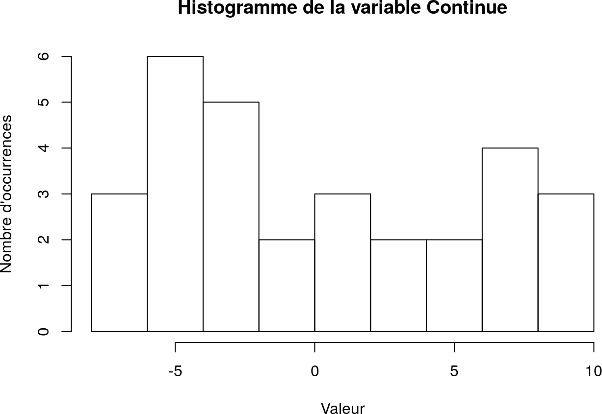
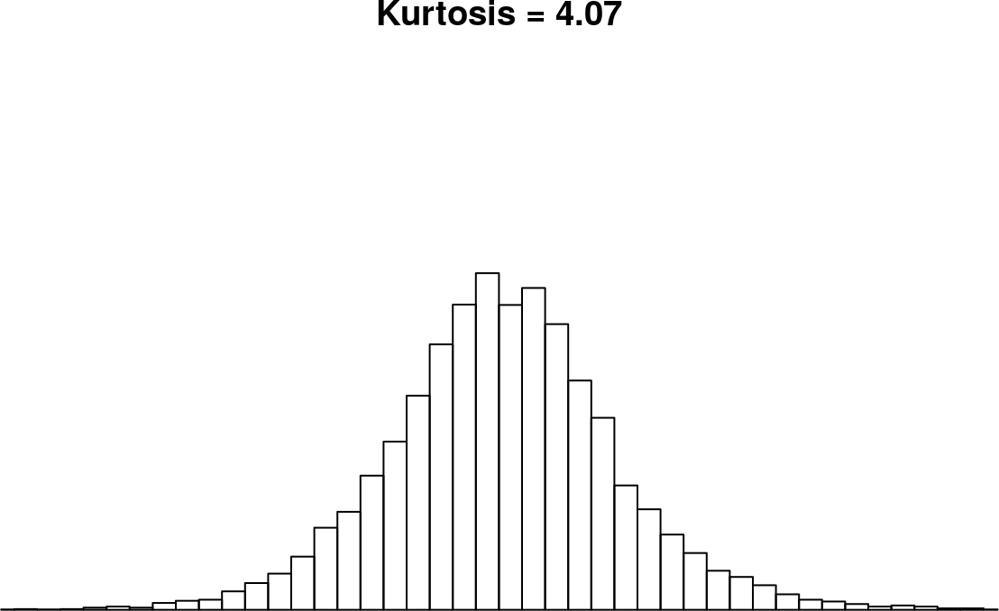
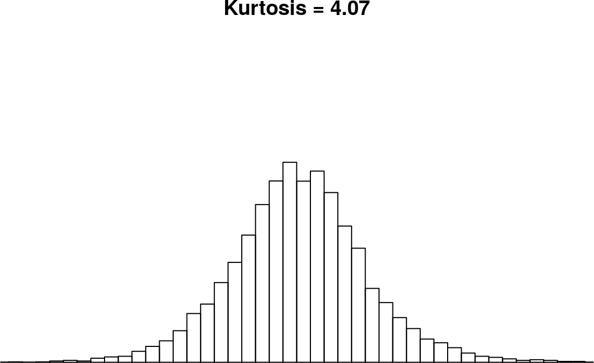

2 Analyse quantitative univariée
Dans ce chapitre, on considère :
- un corpus de données de \(N\) individus ;
- une variable quantitative \(X\) sur ce corpus de données.
Pour tout entier \(i\) entre \(1\) et \(N\), on note \(x_i\) la valeur de la variable \(X\) pour le \(i\)-ème individu, de sorte que, dans tout le reste du document, on identifiera \(X\) avec le vecteur \((x_i)_{1 \leq i \leq n}\) de \(\mathbb{R}^N\).
Représentation graphique : histogramme
Pour construire un histogramme, on effectue un regroupement par intervalles des valeurs. Pour chaque intervalle, on trace un rectangle dont :
- la hauteur est proportionnelle au nombre de valeurs comprises dans cet intervalle ;
- la largeur est proportionnelle à la largeur de l’intervalle.
On utilise souvent un regroupement par intervalles de largeurs identiques, mais ce n’est en aucun cas une obligation.

Figure 2.1: Exemple d’histogramme
En R : Tracer l’histogramme d’une variable quantitative.
On utilise la fonction
hist:
breaksspécifie les intervalles utilisés pour le regroupement des valeurs :
- par le nombre d’intervalles désiré ou une fonction permettant de le calculer ;
- par le vecteur des bornes des intervalles ou une fonction permettant de les calculer ces bornes ;
freqspécifie si on affiche le nombre ou le pourcentage d’occurrences :
freq = TRUEaffiche le nombre d’occurrences ;freq = FALSEaffiche le pourcentage d’occurrences ;maindéfinit le titre du graphique ;xlabdéfinit la légende en abscisse ;ylabdéfinit la légende en ordonnée.hist(data$Continue, breaks = 10, freq = TRUE, main = "Histogramme de la variable Continue", xlab = "Valeur", ylab = "Nombre d'occurrences")
Il est possible de récupérer les bornes des intervalles en consultant le champ
breaksdu résultat dehist:(
plot = FALSEpermet de ne pas afficher l’histogramme.)Lorsque
breaksn’est pas précisé, la fonctionhistcalcule elle-même une proposition d’intervalles :hist(data$Discrète, freq = TRUE, main = "Histogramme de la variable Discrète", xlab = "Valeur", ylab = "Nombre d'occurrences")

2.1 Indicateurs de position
Les indicateurs de position permettent d’identifier une tendance centrale de la variable autour de laquelle les valeurs se positionnent.
2.1.1 Moyenne
En R : Calculer la moyenne d’une variable quantitative
On utilise la fonction
mean.L’option
na.rmspécifie si les valeurs manquantes doivent être retirées avant le calcul de la moyenne (par défaut, ce n’est pas le cas).
IMPORTANT. La moyenne est une mesure sensible aux valeurs extrêmes de la série. Si l’on ajoute, supprime ou remplace une valeur par une valeur très faible ou très forte, alors la moyenne de la nouvelle variable est très différente de la moyenne avant modification.
2.1.2 Quantiles
Médiane
Définition 2.2 La médiane de \(X\) est une valeur \(m\) telle que :
- la moitié des individus ont une valeur de \(X\) inférieure à \(m\) ;
- la moitié des individus ont une valeur de \(X\) supérieure à \(m\).
Par convention, si on classe les valeurs de \(X\) pour les \(N\) individus dans l’ordre croissant :
- si \(N\) est impair, alors la médiane est la \(\dfrac{N + 1}{2}\)-ème plus petite valeur ;
- si \(N\) est pair, alors la médiane est la moyenne des \(\dfrac{N}{2}\)-ème et \(\left(\dfrac{N}{2} + 1\right)\)-ème plus petites valeurs.
En R : Calculer la médiane d’une variable quantitative
On utilise la fonction
median.sort(data$Continue) [1] -7.61 -7.20 -6.01 -5.91 -5.77 -5.70 -4.56 -4.12 -4.06 -3.81 -3.58 [12] -3.55 -3.49 -2.79 -1.84 -1.59 0.12 1.23 1.81 2.87 3.55 5.72 [23] 5.86 6.74 7.01 7.22 8.00 8.18 9.23 9.61 median(data$Continue) [1] -1.715Dans cet exemple, il y a 30 individus. Donc la médiane est alors la moyenne de la 15ème et la 16ème plus petite valeur, i.e. \(\dfrac{-1.84 + -1.59}{2} = -1.715\).
sort(data$Continue[1:29]) [1] -7.61 -7.20 -6.01 -5.91 -5.77 -5.70 -4.56 -4.12 -4.06 -3.81 -3.58 [12] -3.55 -3.49 -2.79 -1.84 -1.59 0.12 1.23 1.81 2.87 3.55 5.86 [23] 6.74 7.01 7.22 8.00 8.18 9.23 9.61 median(data$Continue[1:29]) [1] -1.84Si on effectue la médiane sans la dernière valeuri (ici \(5.72\)), la médiane est alors la 15ème plus petite valeur, i.e. \(-1.84\).
L’optionna.rmspécifie si les valeurs manquantes doivent être retirées avant le calcul de la médiane (par défaut, ce n’est pas le cas).
IMPORTANT. Contrairement à la moyenne, la médiane est peu sensible aux valeurs extrêmes.
Quartiles
Définition 2.3 On définit les trois quartiles de \(X\) :
- le premier quartile comme une valeur \(Q_1\) telle que 25% des individus ont une valeur de \(X\) inférieure à \(Q_1\) ;
- le deuxième quartile comme une valeur \(Q_2\) telle que 50% des individus ont une valeur de \(X\) inférieure à \(Q_2\) ;
- le troisième quartile comme une valeur \(Q_3\) telle que 75% des individus ont une valeur de \(X\) inférieure à \(Q_3\).
Remarque. On peut construire sur le même principe :
- les déciles (par tranche de 10%) ;
- les centiles (par tranche de 1%).
En R : Calculer les quartiles d’une variable quantitative
On utilise la fonction générique
quantile:quantile(data$Continue, 0.25) # Premier quartile 25% -4.105 quantile(data$Continue, 0.50) # Deuxième quartile (médiane) 50% -1.715 quantile(data$Continue, 0.75) # Troisième quartile 75% 5.825L’option
na.rmspécifie si les valeurs manquantes doivent être retirées avant le calcul du quantile (par défaut, ce n’est pas le cas).
ATTENTION ! Dans le casna.rm = FALSE(qui est le cas par défaut), l’appel dequantileprovoque une erreur si il y a des valeurs manquantes (NA).
En R : Calculer les déciles d’une variable qualitative
On utilise toujours la fonction
quantile.
Dans l’exemple précédent, on n’avait qu’une seule proportion (25%, 50% ou 75%) en entrée : la fonction accepte un vecteur de proportions et calcule les quantiles pour chacune des proportions.
Pour calculer les déciles, on considère le vecteur suivant :
2.2 Indicateurs de dispersion
Les indicateurs de dispersion indiquent la fluctuation des valeurs de la variable autour d’une tendance centrale (si il y en a une).
2.2.1 Étendue
En R : Calculer l’étendue d’une variable quantitative
On utilise les fonctions
minetmaxqui calculent respectivement la plus petite et la plus grande valeur d’une série de données.L’option
na.rmspécifie si les valeurs manquantes doivent être retirées avant le calcul du minimum et du maximum (par défaut, ce n’est pas le cas).
IMPORTANT. L’étendue est une mesure sensible aux valeurs extrêmes de la série.
2.2.2 Écart inter-quartile
L’intérêt de cette mesure est justifiée par le résultat suivant.
En R : Calculer l’écart inter-quartile d’une variable quantitative
On utilise la fonction
IQR(pour InterQuartile Range).L’option
na.rmspécifie si les valeurs manquantes doivent être retirées avant le calcul de l’ecart inter-quantile (par défaut, ce n’est pas le cas).
ATTENTION ! Dans le casna.rm = FALSE(qui est le cas par défaut), l’appel deIQRprovoque une erreur si il y a des valeurs manquantes (NA).
IMPORTANT. L’écart inter-quartile est une mesure peu sensible aux valeurs extrêmes de la série.
Boîte de Tukey
En R : Calculer quelques indicateurs d’une variable quantitative
On utilise la fonction
summaryqui renvoie, dans l’ordre :
- la plus petite valeur position ;
- le premier quartile ;
- la médiane ;
- la moyenne ;
- le troisième quartile ;
- la plus grande valeur possible ;
- et, le cas échéant, le nombre de valeurs manquantes.
À partir de ces données, on peut en tirer une répresentation graphique simple d’une variable quantitative appelée boîte de Tukey ou, plus communément, boîte à moustaches à cause de sa forme.
Sur un axe undimensionnel :
- on construit une boîte dont les extrêmités sont le premier quartile \(Q_1\) et le troisième quartile \(Q_3\) ;
- on place également la médiane (qui est nécessairement à l’intérieur de la boîte) ;
- on ajoute les “moustaches” de part et d’autre de la boîte aux positions suivantes :
- la plus petite valeur supérieure à \(Q_1 - \dfrac{3}{2}(Q_3 - Q_1)\) ;
- la plus grande valeur inférieure à \(Q_3 + \dfrac{3}{2}(Q_3 - Q_1)\).
Figure 2.2: Exemple de boîte de Tukey
En R : Représenter la boîte de Tukey d’une variable quantitative
On utilise la fonction
boxplot:
maindéfinit le titre du graphique ;xlabdéfinit la légende en abscisse ;ylabdéfinit la légende en ordonnée.La médiane est représentée par un trait plus épais.

On peut également représenter les boîtes de plusieurs variables simultanément afin de faciliter la comparaison visuelle.boxplot(data[c("Continue", "Discrète")], main = "Boîtes de Tukey des variables quantitatives", xlab = "Variables", ylab = "Valeurs")
La fonction affiche également les valeurs atypiques (lorsqu’il y en a) :


2.2.3 Variance. Écart-type
En R : Calculer la variance d’une variable quantitative
On utilise la fonction
var.
Mais pour des raisons qui seront vues en seconde année,varcalcule l’expression \[\dfrac{1}{N - 1}\displaystyle\sum_{i = 1}^N \left(x_i - \overline{X}\right)^2 = \dfrac{N}{N - 1} \sigma_X^2\] On construit alors une fonctionvar.pqu calcule \(\sigma_X^2\) :(La fonction
lengthcalcule la longueur d’un vecteur.)L’option
na.rmspécifie si les valeurs manquantes doivent être retirées avant le calcul de la variance (par défaut, ce n’est pas le cas).
IMPORTANT. Comme la variance est une moyenne, c’est une mesure sensible aux valeurs extrêmes de la série.
En R : Calculer l’écart-type d’une variable quantitative
On utilise la fonction
var.pdéfinie précédemment. On construit alors une fonctionsd.pqui calcule \(\sigma_X\) :L’option
na.rmspécifie si les valeurs manquantes doivent être retirées avant le calcul de l’écart-type (par défaut, ce n’est pas le cas).
IMPORTANT. Comme l’écart-type est directement lié à la variance, c’est une mesure sensible aux valeurs extrêmes de la série.
2.3 Autres indicateurs
2.3.1 Coefficient d’asymétrie
Le coefficient d’asymétrie permet de décrire la répartition des valeurs de \(X\) autour de la moyenne :
- un coefficient d’asymétrie nul ou proche de zéro caractérise une répartition symétrique de part et d’autre de la moyenne ;
- un coefficient d’asymétrie positif caractérise une répartition à gauche de la moyenne ;
- un coefficient d’asymétrie négatif caractérise une répartition à droite de la moyenne.


Figure 2.3: Types d’asymétrie
En R : Calculer le coefficient d’asymétrie d’une variable quantitative
On utilise les fonctions
meanetsd.p:skewness <- function(x, na.rm = FALSE) { m <- mean(x, na.rm = na.rm) mean((x - m)^3, na.rm = na.rm) / (sd.p(x, na.rm = na.rm)^3) }L’option
na.rmspécifie si les valeurs manquantes doivent être retirées avant le calcul du coefficient d’asymétrie (par défaut, ce n’est pas le cas).
2.3.2 Coefficient d’aplatissement (ou kurtosis)
Définition 2.10 Le coefficient d’aplatissement (ou kurtosis) de \(X\) est défini par la moyenne des puissances quatrième des distances réduites à la moyenne, c’est-à-dire \[\dfrac{1}{N}\displaystyle\sum_{i = 1}^N \left(\dfrac{x_i - \overline{X}}{\sigma_X}\right)^4 = \dfrac{1}{\sigma_X^2} \dfrac{1}{N}\displaystyle\sum_{i = 1}^N \left(x_i - \overline{X}\right)^4\]
Le kurtosis normalisé de \(X\) est défini par le kurtosis moins \(3\), c’est-à-dire \[\left[\dfrac{1}{\sigma_X^2} \dfrac{1}{N}\displaystyle\sum_{i = 1}^N \left(x_i - \overline{X}\right)^4\right] - 3\]Le kurtosis (ou sa version normalisée) permet de décrire la concentration de valeurs de \(X\) autour de la moyenne :
- une valeur élevée du kurtosis caractérise un ensemble des valeurs concentrées autour de la moyenne avec peu d’individus atypiques ;
- une valeur faible du kurtosis caractérise un ensemble des valeurs peu concentrées autour de la moyenne avec plus d’individus atypiques.
 

Figure 2.4: Types d’applatissement (moyennes et variances identiques)
En R : Calculer le coefficient d’asymétrie et le coefficient d’aplatissement d’une variable quantitative
On utilise les fonctions
meanetvar.p:kurtosis <- function(x, na.rm = FALSE) { m <- mean(x, na.rm = na.rm) mean((x - m)^4, na.rm = na.rm) / (var.p(x, na.rm = na.rm)^2) } kurtosis_excess <- function(x, na.rm = FALSE) { kurtosis(x, na.rm = na.rm) - 3 }L’option
na.rmspécifie si les valeurs manquantes doivent être retirées avant le calcul du coefficient d’asymétrie (par défaut, ce n’est pas le cas).